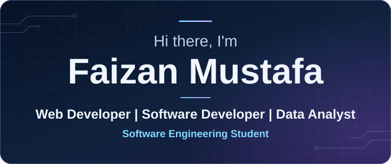
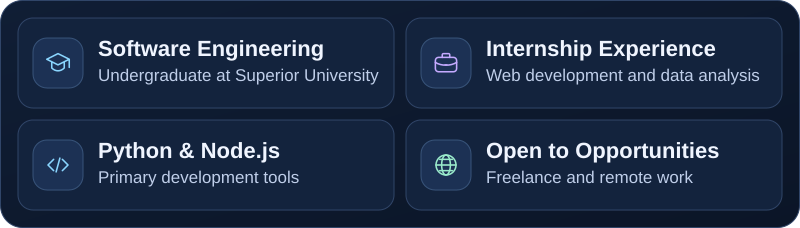
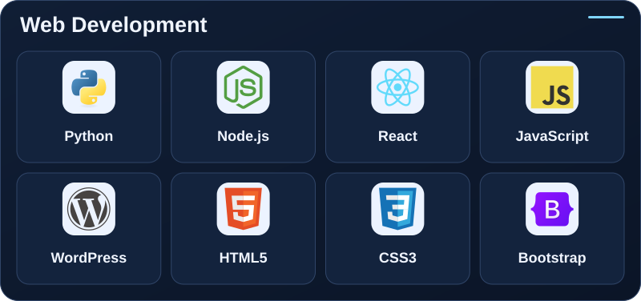
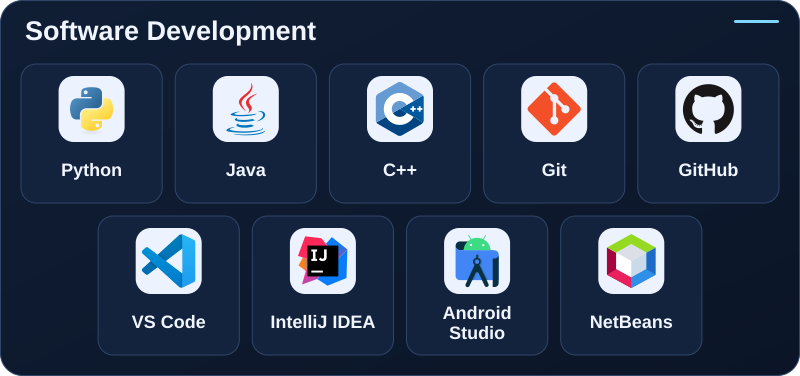
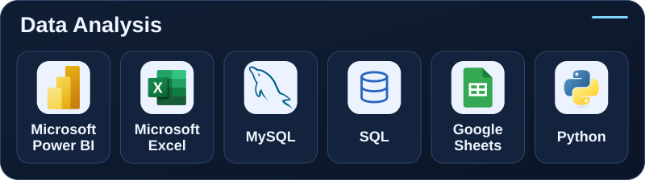
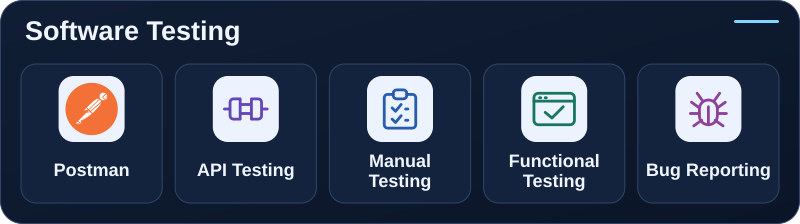
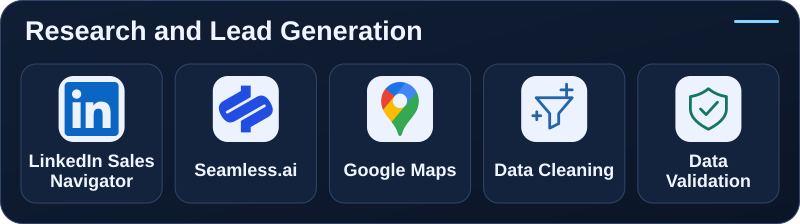
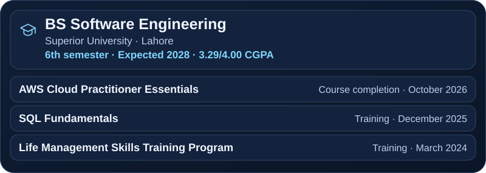

About Me

Skills





Featured Projects
![Featured Projects. Development: Personal Portfolio Website. Built a personal portfolio using React, Vite, and Tailwind CSS. Development: Online Shopping System. Built product browsing, cart, checkout, and order history with Java Swing and MySQL. Academic testing: Attendance Management System. Verified attendance workflows, database CRUD operations, and report outputs. Academic testing: Courier Pick & Drop Website. Tested booking and tracking flows and checked API behavior in Postman. Academic testing: File Explorer System. Tested file operations and invalid inputs. Documented defects. Academic testing: Lost & Found Community App. Tested form validation and authentication flows in the Flutter app. Academic testing: AI/NLP Chatbot. Tested intent recognition, response accuracy, fallback behavior, and the API.](assets/projects-mobile.svg)
Professional Experience
![Professional Experience. Web Development Intern, Badar Munir Ahmed Solutions, June 2026 – August 2026. Gained hands-on exposure to web technologies and development tools and learned how a professional software team organizes and carries out project work. Data Analyst Intern, VirtualUX (SMC-Private) Limited, February 2026 – May 2026. Conducted business research and B2B lead generation with LinkedIn Sales Navigator and Seamless.ai. Worked with Microsoft Excel, Microsoft Power BI, and Google Sheets. Cleaned and verified data and removed duplicate records.](assets/experience-mobile.svg)
Education & Training








